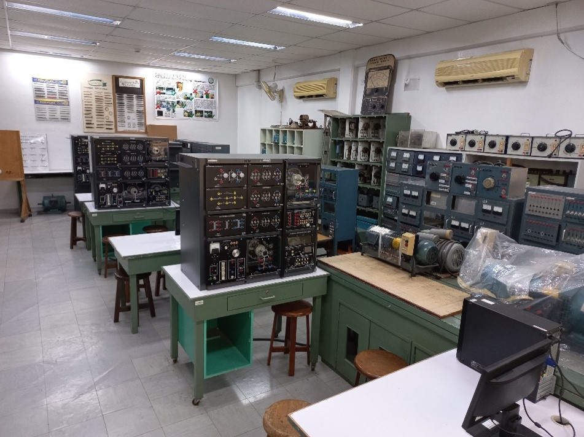

Laboratory Facilities
Electrical Machine Laboratory


The laboratory is equipped with equipment and trainers needed to conduct all tests and measurements to learn more about the major types of DC/AC motors and generators and single- and three-phase transformers. The training modules combine theory and application with practical skill-training techniques.
Room: M402A
Equipment: Electromechanical training systems, Motors, Generators, Transformers, Wattmeters, Tachometers